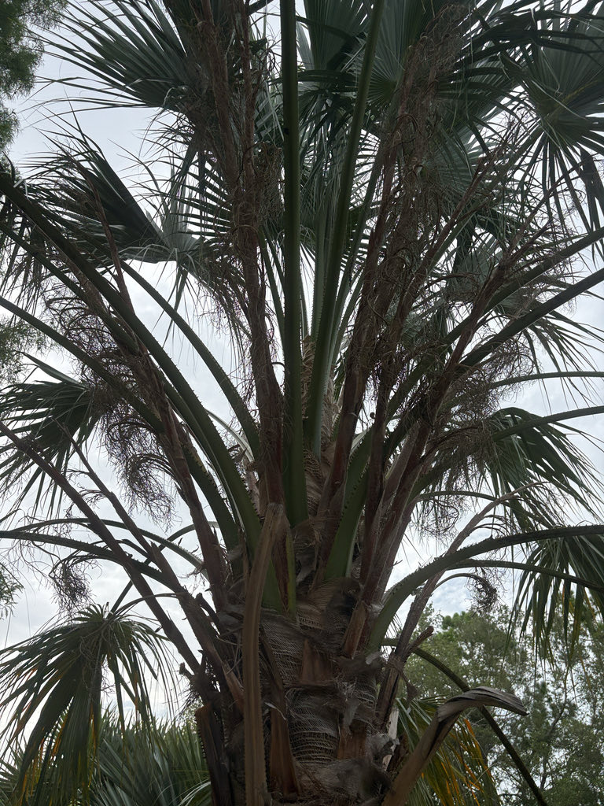

- Every young Red Cabbage Palm grown in full sun starts life looking vaguely on fire: the new fronds flush deep red to maroon. The red pigmentation — anthocyanins — is thought to act as a built-in sunscreen, shielding vulnerable young tissue from intense desert radiation. The color fades leaf by leaf, then petiole by petiole, and is gone entirely before the trunk appears.
- For decades botanists assumed these palms were Pleistocene relicts — stranded survivors of a wetter Australia, somehow hanging on in a desert gorge. A genetic study published in 2012 overturned that story: the palms arrived only about 15,000 years ago, most likely carried there by people.
- An 1895 text by German anthropologist and missionary Carl Strehlow had already recorded Arrernte oral tradition describing ancestors from the north bringing seeds to Palm Valley — a story that turned out to be essentially correct. The genetic evidence points squarely to human-mediated dispersal, making this one of the few palms whose origin story is preserved in both oral tradition and DNA.
- The entire wild population — more than 3,000 adult palms — occupies a single gorge system in Australia's interior, separated from the nearest related palm by over 600 miles of desert. It is the only palm of any kind in central Australia.
The Red Cabbage Palm grows wild in one place on Earth: Palm Valley, within Finke Gorge National Park in the MacDonnell Ranges of Australia's Northern Territory. The valley sits in one of the continent's most arid regions, where annual rainfall averages roughly 250 mm, and the palms survive not on rain but on permanent groundwater accessed along the ancient Finke River system.
More than 3,000 adult palms grow there, many of them several hundred years old, forming a lush oasis in a landscape of red sandstone gorges. The species is the only palm in central Australia and is separated from its nearest relative — the Mataranka palm (Livistona rigida) — by over a thousand kilometers of desert.
It came to Florida as a cultivated ornamental, valued for its striking juvenile foliage, drought tolerance, and architectural form. The genus Livistona takes its name from the Scottish town of Livingston, honoring Baron Patrick Murray, who helped establish the Edinburgh Botanic Garden in the 17th century.
- For most of the 20th century, botanists assumed the Red Cabbage Palm was a Pleistocene relict — a palm left behind when central Australia dried out after a wetter climatic period.
- A 2012 genetic study published in the Proceedings of the Royal Society B demolished that explanation: Livistona mariae is genetically near-identical to Livistona rigida, the Mataranka palm of the Northern Territory coast, and arrived in Palm Valley only about 15,000 years ago — far too recently to have simply been stranded there by climate change.
- The overwhelming evidence now points to Aboriginal peoples carrying the seeds south. An 1895 text by German anthropologist and missionary Carl Strehlow had already recorded Arrernte oral tradition describing ancestors from the north bringing seeds to Palm Valley — a narrative that, remarkably, aligns with what the genetics show.
- The palm also holds deep practical significance: the tender apical bud was eaten as 'cabbage,' and the fibrous leaf bases were used for basket-weaving and fishing line. In the wild, the trees survive not on rainfall — which averages only about 250 mm per year — but on permanent groundwater drawn up through deep root systems tapping ancient aquifers along the Finke River.
- In the wild, the species is listed as Vulnerable under Australian federal law, threatened mainly by invasive buffel grass (which alters fire regimes and outcompetes seedlings) and by trampling of seedlings at heavily visited tourist sites. The entire global wild population is almost entirely contained within a single national park.
- In cultivation, the palm is a conservation asset as much as an ornamental one — each tree in a garden represents genetic material from an extremely small and isolated wild population.
In its Palm Valley home, the Red Cabbage Palm supports the local fauna with both shelter and fruit. The globose black fruits — the largest produced by any Australian Livistona — have a relatively fleshy, sweet pericarp that attracts birds and mammals when ripe. In cultivation, the inflorescences draw pollinating insects when in bloom.
Because this palm has no evolutionary history with Florida's native fauna, it does not function as a larval host for local butterflies or moths. Visitors looking for the park's best pollinator and butterfly habitat will find it in the native plantings nearby.
The palm is functionally dioecious — flowers are morphologically hermaphroditic but plants behave as either male or female in practice. Inflorescences are interfoliar (emerging from among the leaf bases), branched, and can reach several feet in length, bearing small cream to yellow flowers. In the wild, flowering runs roughly July through December (Southern Hemisphere winter into spring).
Globose to slightly ovoid drupes, 18 to 25 mm in diameter — the largest fruit of any Australian Livistona. They ripen from green through yellow to glossy black. The pericarp is relatively thick and fleshy, and sweet when fully ripe. Each fruit contains a single hard seed.
Costapalmate, semicircular to nearly circular, 1.5 to 2.5 meters in diameter, glossy green above and paler with a waxy underside below. Each blade is divided into 50 to 80 stiff segments whose tips droop gracefully downward.
In juveniles grown in full sun, fronds flush deep red to maroon before the palm forms a trunk; this color fades from the blades first, then the petioles, and is gone entirely in mature trees. Petioles are armed with marginal teeth.
Solitary, erect, reaching up to about 30 meters in the wild (considerably less in cultivation). Trunk diameter is 30 to 40 cm at chest height. Young trunks are clad in a dense mass of dark brown fibrous leaf-base material; older trunks clear to smooth grey with stepped, raised leaf-scar rings. Petiole stubs persist on the lower meter or so of the trunk but are otherwise shed.
If you are looking at a young plant, start with the leaf color: juveniles in full sun have unmistakably reddish to maroon fronds — the feature that gives this palm its common name. That red comes from anthocyanins, pigments thought to act as a natural sunscreen shielding tender young tissue from the punishing desert sun of its homeland.
On older plants, look up into the crown for the nearly circular fan fronds with gracefully drooping segment tips, and note the waxy, paler underside of each blade.
The trunk is the other landmark: smooth grey above with clean ring-scars, and shaggy with retained fibrous leaf-base material low on the stem. When in fruit, the clusters of large, glossy-black drupes are visible beneath the crown and are noticeably bigger than the fruit of most other fan palms.
The petioles carry marginal teeth that can scratch or cut — use care when working close to fronds. The apical bud (the growing 'heart') has a long history of use as food by Aboriginal Australians, but harvesting it kills the palm, so it is very much off-limits here.
The ripe fruit flesh is technically sweet and has been eaten, but it is not a recognized food source in any culinary tradition outside its native range and is best left alone. No known toxicity to people, dogs, or cats.
Livistona mariae subsp. mariae is listed as Vulnerable under Australia's Environment Protection and Biodiversity Conservation Act. The entire wild population is almost wholly contained within Finke Gorge National Park.
Growing this palm in cultivation has a genuine conservation dimension: the wild gene pool is extremely small, and every cultivated specimen represents material from a species with very limited genetic diversity.
Palmpedia documents a specimen of Livistona mariae growing at the University of Florida in Gainesville — evidence that the species is viable in north-central Florida as well as in the warmer south.


- © Randall Carter (CC-BY-NC), via iNaturalist